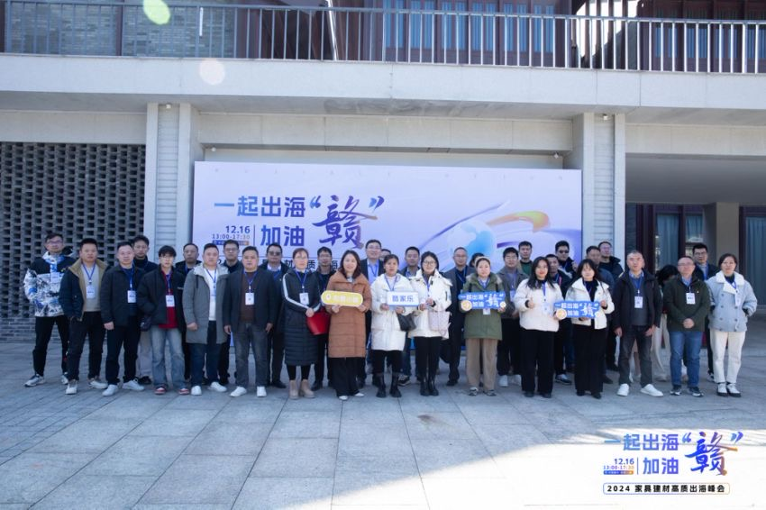
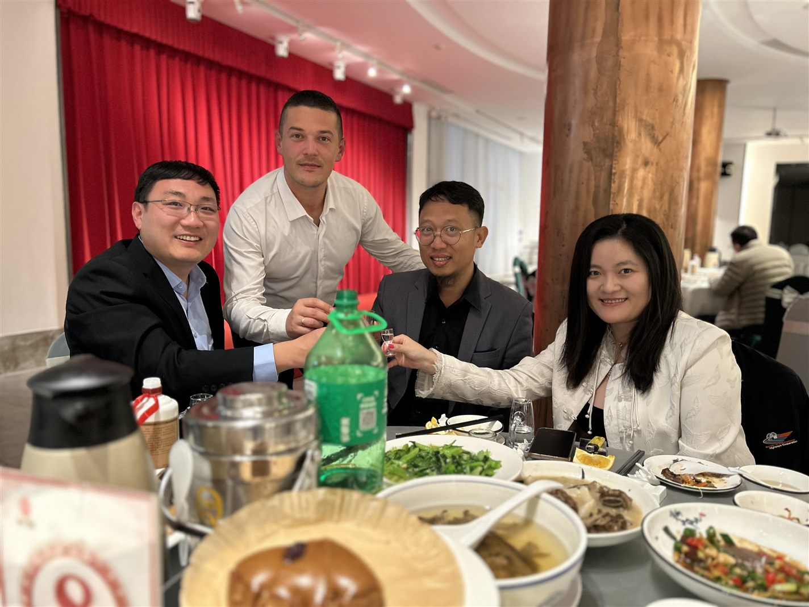

MEDIA-05
第三方报道 · MEDIA COVERAGE
董立鑫解读家具建材全球化增长趋势与高质量出海路径
Growth trends and high-quality outbound paths for the global furniture & building-materials market.
第三方媒体报道：海鑫汇创始人兼CEO、和君咨询合伙人董立鑫亮相“2024 家具建材高质出海峰会”，结合 18 国实战经验解读家具建材全球化增长趋势与高质量出海路径。来源：网易（酷家乐定制头条）。
报道概述
海鑫汇创始人兼CEO、和君咨询合伙人董立鑫亮相和君发起的“2024 家具建材高质出海峰会”，围绕全球家具建材市场增长、企业出海目标市场定位、进入路径设计及关键资源获取等核心问题，结合 18 国海外实战经验分享家具建材企业突破内卷、拓展国际市场的全球化战略与实战洞察，并与全球外贸专家、跨境电商平台及产业代表共同探讨中国家居建材产业高质量出海。

海鑫汇视角
内卷的尽头是海外。家具建材企业真正的增量，在 18 国实战经验背后的目标市场定位与进入路径设计。

原文链接
本报道由 酷家乐家居头条（群核科技）首发，并见于 网易 转载，点击查阅完整原文： 酷家乐家居头条（微信）→ · 网易 →
本文为第三方媒体对海鑫汇创始人兼CEO董立鑫的公开报道整理，首发于 酷家乐家居头条（群核科技），并见于 网易。 查看官网原文 →
想把“出海”从口号变成可执行的路径？先做一次免费首诊判断。
预约免费首诊 →